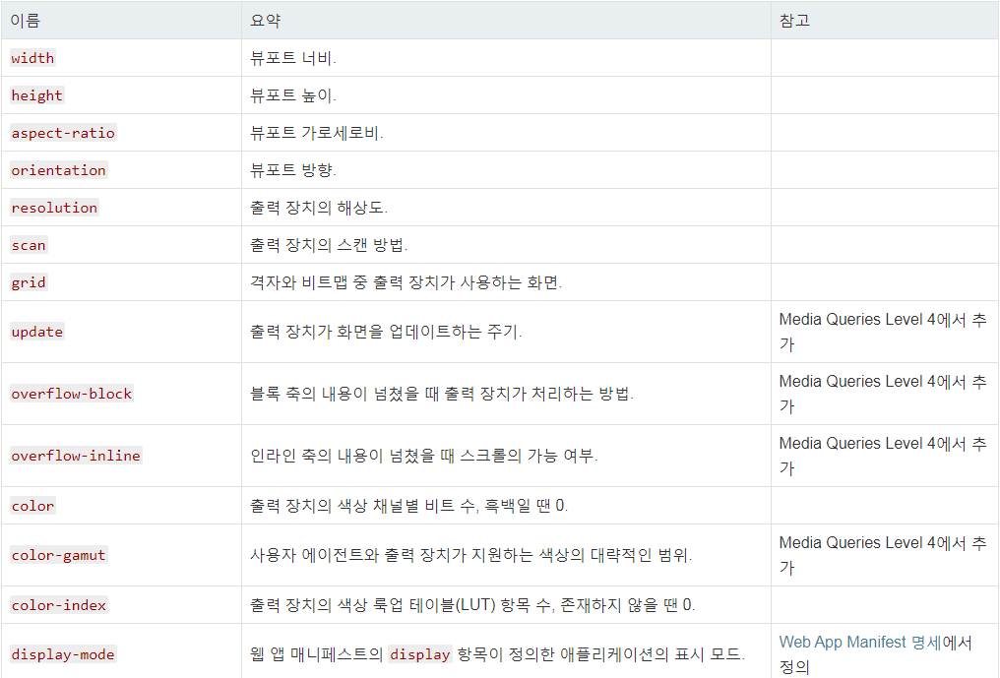

CSS
CSS(Cascading Style Sheets)는 HTML로 작성된 문서를 쓰기위한 스타일 시트 언어입니다.
HTML은 문서의 골격을 이룬다면 CSS는 그 골격에 맞는 디자인 작업언어라고 생각하면 됩니다.
CSS 선택자
CSS 선택자를 통해 요소를 선태가호 속성을 줄 수 있습니다.
기본 선택자
| 종류 | 예시 | 이름 |
|---|---|---|
| 태그 선택자 | p(color: #fff) | p태그를 선택해서 글씨 색을 하얀색으로 설정합니다 |
| 클래스 선택자 | .class(color: #fff) | class 클래스를 선택하여 글씨 색을 하얀색으로 설정합니다. |
| 아이디 선택자 | #id(color: #fff) | id 아이디를 선택하여 글씨 색을 하얀색으로 설정합니다. |
| 그룹 선택자 | p, #id(color: #fff) | p 태그와 아이를 선택하여 글씨 색을 하얀색으로 설정합니다. |
| 전체 선택자 | *(color: #fff) | 전체 태그를 선택하여 글씨 색을 하얀색으로 설정합니다. |
- id 선택자
- 하나의 태그만 식별하기 위한 선택자입니다.
- 하나의 태그에만 하나만 사용할 수 있습니다.
- "#"으로 표시합니다.
- class 선택지
- 여러개의 태그를 식별하기 위한 선택지입니다.
- 하나의 태그에서 여러개를 사용할 수 있습니다.
- "."으로 표시합니다.
링크 가상 클래스
| 종류 | 예시 | 이름 |
|---|---|---|
| :link | a:link(color: #fff) | 방문하지 않은 링크의 글씨 책을 하얀색으로 설정합니다. |
| :visited | a:visited(color: #fff) | 방문한 링크의 글씨 색을 하얀색으로 설정합니다. |
| :hover | a:hover(color: #fff) | 링크 위에 마우스를 올려 놓았을 경우 글씨 색을 하얀색으로 설정합니다. |
| :active | a:active(color: #fff) | 링크가 활성화되었을 경우 글씨 색을 하얀색으로 설정합니다. |
홈 관련 선택자
| 종류 | 예시 | 이름 |
|---|---|---|
| :checked | input:cheked (color: #fff) | input태그가 체크되었을 때 글씨 색을 하얀색으로 설정합니다. |
| focus | input:focus(color: #fff) | 태그에 초점이 맞추어 졌을 때 글씨 색을 하얀색으로 설정합니다. |
| enabled | input:enabled(color: #fff) | input 태그가 사용 가능하면 글씨 색을 하얀색으로 설정합니다. |
| :disavled | input:disavled(color: #fff) | input태그가 사용 가능하지 않으면 글씨 색을 하얀색으로 설정합니다. |
속성 선택자
| 종류 | 예시 | 설명 |
|---|---|---|
| attrivute | a[target] { color: red; } | a태그에 target이라는 속성을 가진 요소를 선택한다. |
| [attribute=”value”] | a[target="_blank"] { color: red; } | a태그에 target=”_blank”라는 속성을 가진 요소를 선택한다. target이 반드시 _blank인 요소만 잡으니 주의! |
| [attribute~=”value”] | div[class~="apple"] { background-color: red; } | apple이라는 class를 가진 요소를 선택한다.여러개의 class가 함께 지정되어 있어도,apple을 가졌다면 선택한다. |
| [attribute|=”value”] | div[class|="layer"] { background-color: red; } | layer라는 class로 시작하는 요소만 선택하되, 하이픈으로 구분해 더 많은, 더 다양한 요소를 선택할 수 있다. |
| [attribute^=value] | div[class^="minions"] { background-color: red; } | minions라는 class로 시작하는 요소를 전부 선택한다. |
| [attribute$=value] | input:disavled(color: #fff) | end라는 class로 끝나는 요소를 선택한다. .pdf등을 값(value)으로 지정해 특정 파일만 선택하는 것도 가능하다. |
| [attribute*=value] | div[class*="wow"] { background-color: red; } | wow라는 class를 가진 모든 요소를 선택한다. class가 어떻게 조합이 되어도 wow만 완성되면 무조건 선택한다. |
CSS 색상
CSS를 통해 색상을 표현하는 방법은 4가지가 있습니다.
16진수 표기법
웹 문서에서 색상을 표현하는 방법은 16진수를 표현하는 방법입니다, 두자리씩 묶어서 #RRGGBB형식으로 표현하며, RR은 빨간색 GG는 초록색 BB는 파란색의 양을 표현합니다.각 생상의 하난도 섞이지 않았음은 00부터 가득 섞였음은 FF까지 사용할 수 있습니다.
RGB와 RGBA
웹 문서에서 색상을 표현하는 rgb(255.255.255)는 십진수를 이용하여 표현합니다. 색이 하나도 섞이지 않았을 때에는 0으로 표시하고 가득 섞였을 때에는 255로 표현합니다. 숫자는 색상의 양을 나타내고 a는 투명도(alpha)를 나타냅니다. 투명도 0과 1사이로 표현합니다.
HSL와 HSLA
웹 문서에서 색상을 표현하는 HSL은 색상(hue), 채도(saturation), 밝기(lightness)를 나태냅니다. 색상은 동글게 배치한 색상환으로 표시하고 0도와 360도에는 빨간색, 120도에는 초록색. 240에는 파란색이 배치됩니다. 채도가 0%이면 회색톤, 100%이면 순색으로 표시됩니다. 밝기는 0%에서는 가장 어둡고 100%에서 가장 밝습니다.
색상 이름 표기법
색상 이름을 이용하여 색을 표현 할 수 있습니다. 가장 기본적인 16가지를 포함하여 216가지의 색상 이름 표기법이 있습니다.
aupe, black, bule, fnchsia, gray, green, lime, maroon, navy, oilve, purple, red, silver, white, yellow
Bitmap방식과 Vector방식
- Bitmap : 2차원적인 사각 평면을 작은 격자로 나누고 그 위에 이미지가 표현된다고 했을 때, 비트맵은 0과 1로 된격자(grid)이다. 이 격자를 컴퓨터가
픽셀로 변환시켜 표현하는 것으로, 컴퓨터 그래픽에서 글자 혹은 이미지를 표현하는 픽셀(poxel)의 집합이라고도 할 수 있다.
- 실물에 가까운 이미지들을 제작하고 표현하는 데 상당히 효과적
- 확장자 : JPEG, GIF, BMP, PNG
- Vector : 크기와 방향을 가지는 양을 '백터'라고 한다. 대응되는 개념으로 크기만을 가지는 변량은 '스킬라'라고 부른다. 예컨대 길이, 질량, 넓이는
스킬라이고 속도, 가속도, 힘은 벡터이다.
- 수학적 계산에 의해 표현되는 방식 로고, 패턴, 폰드등을 표현하는데 많이 사용
- 점,선,면의 한계에서 벗어나지 못하기 때문에 사물의 디테일한 표현에는 어려움이 있음, 면의 분할에 따른 표현만이 가능하기 때문입니다.
CSS 선언
HTML 문서에 스타일 선언하는 방법은 3가지 방법이 있습니다.
- 내부 스타일(Internal Style Sheet) : head 태그 안에 선안하는 방법
- 외부 스타일(External Style Sheet) : 외부 파일로 연결하는 방법
- 인라인 스타일(Inline Style Sheet) : 태그에 직접 연결하는 방법
<!DOCTYPE html>
<html lang="en">
<head>
<meta charset="UTF-8">
<title>Document</title>
<!--내부 스타일-->
<style>
h1 {color: #fff;}
</style>
<!--외부 스타일-->
<link rel="stylesheet" href="경로">
</head>
<body>
<!--외부 스타일-->
<h1 style="color: #fff"></h1>
</body>
</html>
상대주 절대주소
이미지또는 파일의 경로를 설정하는 방법은 상대주소와 절대주소가 있습니다.
- 상대주소
- 파일의 절대적인 위치를 로딩하므로 상대경로처럼 자신의 위치를 고려 할 필요가 없다.
- HTTP://를 통해 이동 주소를 절대주소라고 합니다.
- 절대주소
- 현재 파일로부터 목적 파일까지 상대적인 위치 관계를 지정하는 방법이다.
- ../ 또는./ 또는 /폴더명 또는 /파일이름,확장자로 이루어져있는 것이 상대주소라고 합니다.
이미지 표현 방법
웹문서에 이미지를 표현하는 방법은 img 태그와 background를 통해 설정할 수 있습니다.
- img 태그로 표현하는 방법 : 이미지가 의미가 있는 경우(로고)
- background로 표현하는 방법 : 이미지가 의미가 없는 경우(장식)
이미지 타입 선택
| 종류 | PC web | Mobile Web | Mobile App |
|---|---|---|---|
| GIF | 기본 | 사용 가능 | X |
| JPG | 컬러수 많거나 운영성 이미지일 때 | 운영성 이미지일 때 | X |
| PNG-8 | X | 기본 | 반투명효과 없고 컬러가 적을때 |
| PNG-24 | 반투명효과가 있을 때에만 사용 | 컬러 수가 많거나 반투명효과가 있을 때 | 기본 |
| 이미지 스프라이트 | O | O | X |
pc web
- 기존 포멧은 GIF를 사용한다.
- JPG는 인물이나 실사 이미지와 같이, 색 변화 및 그라데이션이 풍부한 경우 및 운영성 이미지에 주로 사용한다.
- JGP로 저장 시 압축률 관리
-일반 저장 시(File->Save) : 압축률 10/12 이상으로 저장할 것.
-Save for web 기준 : Original 혹은 JPG Quality 90 이상 - 구형브라우저에서의 PNG 이미지 지원
Mobile Web
- 3G망을 이용하는 유저를 고려하여 용량 축소가 중요하다
- PNG-8 포맷을 기본으로 저장하며, 색상 수가 많거나 반투명 효과가 있으면 PNG-24를 사용한다.
- 용량 대비 이미지 품질을 고려하여 포맷을 변경할 수도 있다.
이미지 스프라이트
아이콘 또는 장식을 위한 이미지요소들은 스프라이트 기법을 활용하여 파일의 사이즈를 최소화하고 효율성을 높일 수 있습니다.
- 여러번의 서버 요청을 한 번으로 줄일 수 가 있습니다.
- 이미지 수정이나 관리가 간편합니다.
- 웹 접근성을 준수하기 위해서 IR 효과를 설정해야 합니다.
-
IR 효과
IR 기법은 이미지 대체텍스트를 제공하기 위한 CSS기법으로 다양한 CSS 기법을 사용하여 이미지 대체 텍스트를 제공할 수 있습니다.
Phark Mefhod
Phark Mefhod : 의미 있는 이미지의 대체 텍스트를 제공하는 경우 : 이미지로 대체할 엘리먼트에 배경이미지를 설정하고 글자는 text-indent를 이용하여 화면 바깥으로 빼내어 보이지 않게 하는 방법
| 항목 | 장점 | 단점 |
|---|---|---|
| 스크린 리더가 읽어 줌 | O | |
| 추가적인 태그 사용 안함 | O | |
| CSS on / Image off시 텍스트 안보임 | O |
PWA IR
의미 있는 이미지의 대체 텍스트로 이미지를 off시에도 대체 텍스트를 보여주고자 할때 : 이미지로 대체할 엘리먼트에 배경이미지를 설정하고 글자를 span태그로
감싼후z-index: -1을 이용하여 화면에 안보이게 처리하는 방법
| 항목 | 장점 | 단점 |
|---|---|---|
| 스크린 리더가 읽어 줌 | O | |
| 추가적인 태그 사용 | O | |
| CSS on / Image off 텍스트 안보임 | O | |
| postion 속성 사용(성능 관련 이슈) | O |
float: left인한 영역 깨짐 방지법
float을 쓰게되면 영역의 높이 값이 0으로 줄어들기 때문에 영역을 유지 하는 방법이 필요합니다.
- 깨지는 여역에 똑같이 float:left를 사용합니다.(X) 모든 박스 영역에 float을 사용하게 되고, 정확하게 깨지는 영역을 알 수가 없습니다.
- float의 성질을 차단하는 clear:both를 사용합니다(X) 깨지는 영역을 정확히 알 수가 없습니다.
- float을 사용한 부모 박스 영역에 overflow:hidden을 사용합니다.(△)
- clearfix를 사용하여 가상의 영역을 만들어줍니다(0)
컨텐츠 요소를 보이지 않게 하는 방법
요소를 보이지 않게 하는 방법은 여러가지가 있습니다.
| 종류 | 반대 | 영역 | 애니메이션 |
|---|---|---|---|
| display : none | display : block | X | X |
| visibility : hidden | visibility : visiblie | O | X |
| opacity : 0; | opacity : 1; | O | O |
미디어쿼리
미디어 쿼리는 선택사항인 미디어 유형과, 자유로운 수의 미디어 특성 표현식으로 이루어집니다. 다수의 쿼리는 논리 연산자를 통해 다양한 방법으로 서로 결합할 수 있습니다. 미디어 쿼리는 대소문자를 구분하지 않습니다.미디어 쿼리는 (유형을 지정했다면) 문서를 보여주는 미디어의 유형이 일치하고, 모든 미디어 특성 표현식의 계산값이 참일 때, 참으로 계산됩니다.
벤더 프리픽스(vendor prefix)
아직 표준이 없는 경우 각 브라우저에서 모두 동일한 효과를 나타내지 않기 때분에 사용한것이 CSS접두어이자 벤더 프릭스(vendor prefix)입니다.
Sass(SCSS)
Sass(Syntactically Awesome Style Sheets)의 3버전에서 새롭게 등장한 SCSS는 CSS 구문과 완전히 호환되도록 새로운 구문을 도입해 만든 Sass의 모든 기능을 지원하는 CSS의 상위집합(Superset) 입니다. 즉, SCSS는 CSS와 거의 같은 문법으로 Sass 기능을 지원한다는 말입니다.
| 데이터 | 설명 | 예시 |
|---|---|---|
| Numbers | 숫자 | 1, .82, 20px, 2em… |
| Strings | 문자 | bold, relative, "/images/a.png", "dotum" |
| Colors | 색상 표현 | red, blue, #FFFF00, rgba(255,0,0,.5) |
| Booleans | 논리 | true, false |
| Nulls | 아무것도 없음 | null |
| Lists | 공백이나 ,로 구분된 값의 목록 | (apple, orange, banana), apple orange |
| Maps | Lists와 유사하나 값이 Key: Value 형태 | (apple: a, orange: o, banana: b) |
특이사항
- Numbers : 숫자에 단위가 있거나 없습니다.
- Strings : 문자에 따옴표가 있거나 없습니다.
- Nulls : 속성값으로 null이 사용되면 컴파일하지 않습니다./li>
- Lists : ()를 붙이거나 붙이지 않습니다.
- Maps : ()를 꼭 붙여야 합니다.
- 주석처리 : /* ... */
Attribute
float
float 속성은 블록요소의 정렬 상태를 설정합니다
- float: left; - 왼쪽 정렬
- float: rihgt; - 오른쪽 정렬
- float: none; - 정렬 안함
width
width 속성은 요소의 가로 값을 정의합니다.
height
height 속성은 요소의 세로 값을 정의합니다.
text-align
text-align 속성은 텍스트 정렬 방식으로 설정합니다.
- text-align: left; - 왼쪽 정렬
- text-align: rigth; - 오른쪽 정렬
- text-align: center; - 가운데 정렬
- text-align: justify; - 양쪽끝에
text-transform
text-transform 속성은 텍스트를 대문자로 또는 소문자로 변경합니다.
- text-transform: none; - 적용 안함
- text-transform: capitalize; - 첫 글자만 대문자만 대문자 변경
- text-transform: uppercase; - 모든 글자를 대문자로 변경
- text-transform: lowercase; - 모든 글자를 소문자로 변경
clear
clear 속성은 float 요소의 성질을 차단합니다.
margin
margin은 박스요소의 바깥쪽 여백을 설정해 합니다.
- margin-top : 10px = 요소의 위쪽 바깥 여백 설정
- margin-right : 11px = 요소의 오른쪽 바깥 여백 설정
- margin-bottom : 12px = 요소의 아래쪽 바깥 여백 설정
- margin-left : 13px = 요소의 왼쪽 바깥 여백 설정
- margin : 10px 11px 12px 13px)(4) = 위쪽/오른쪽/아래쪽/왼쪽 시계방향순서로 여백 설정
- margin : 10px 11px 12px(3) = 위쪽(10px) 왼쪽,오른쪽(11px) 아래쪽(12px)
- margin : 10px 11px(2) = 위쪽,아래쪽(10px) 왼쪽,오른쪽(11px)
- margin : 10px(1) = 모든방향이 10px로 설정
- margin : auto = 자동값, 기본값
- margin : 0px(px생략가능) ahto - 블록구조를 가운데 정렬할 때 사용
padding
background
background 속성은 배경 속성 값을 설정합니다.
background-attachment
background-attachment속성은 이미지의 고정 여부를 설정합니다.
- background-attachment : scroll;(기본)
- background-attachment : fixed;
- background-attachment : local;
background-blend-mode
background-blend-mode 속성은 배경 이미지 브랜드 모드를 설정합니다.
background-clip
background-cilp 속성은 배경 이미지의 고정 여부를 설정합니다.
background-image
background-image 속성은 배경 이미지를 설정합니다.
- background- image : none; - 백그라운드 이미지 속성을 설정하지 않음
- background- image : url(경로); - 백그라운드 이미지 설정
background-origin
background-origin 속성은 배경 이미지의 방향을 설정합니다.
background-position
background-postion 속성은 배경 이미지의 위치를 설정합니다.
background-repeat
background-repeat 속성은 배경 이미지의 반복 여부를 설정합니다.
background-size
background-size 속성은 배경 이미지의 사이즈를 설정합니다.
position
position 속성은 요소의 위치를 설정합니다.
- position: static(기본)
- position: absolute - 요소의 위치를 절대적으로 설정합니다.
- position: relative - 요소의 위치를 상대적 위치 및 기준점을 설정합니다.
- position: fixed - 요소의 위치를 고정으로 설정합니다.
border
border 속성은 테두리 속성을 설정합니다
- border
- border-left
- border-top
- border-right
- border-bottom
- border-widht
- border-left-widht
- border-top-widht
- border-right-widht
- border-bottom-widht
- border-style
- border-left-style
- border-top-style
- border-right-style
- border-bottom-style
- border-color
- border-left-color
- border-top-color
- border-right-color
- border-bottom-color
- border-image
- border-image-outset
- border-image-repeat
- border-image-source
- border-image-width
- border-radius
padding
padding는 요소의 안쪽여백 설정할 때 사용합니다.
text-decoration
문자를 꾸며주는 효과를 가져옵니다. <a> 태그와 함께사용하며 text-decoration를사용하여 밑줄을 사라지게 만들 수 있습니다.
text-indent
text-indent은 px, em, % 등의 단위를 쓰며 블록 요소에만 사용할 수 있습니다. text-indent은 문장을 들여쓰기 하는 경우, 텍스트를 보이지 않게 설정할 경우에 사용됩니다.
list-style
리스트의 스타일을 지정해줍니다.
- ist-style-position : 리스트 위치 지정--> 속성값 inside,outside
- ist-style-type : 리스트의 불렛모양 지정
- disc : 검은 원형
- upper-alpha : 대문자 알파벳
- lower-alpha : 소문자 알파벳
- circle : 원형
- ist-style-image : 리스트의 불렛 이미지로 지정--> 속성값 url(이미지 경로),none
- ist-style : 기존블렛 제거, 이미지 스타일 적용
overflow
float태그사용함에 있어 태그가 넘어간 부분을 처리하는 효과입니다.
float 속성을 사용한 컨텐츠들을 바로 잡기 위하여 사용하고있는 방식입니다.
- visible : 기본값으로 내용이 지정한 영역(높이,너비)보다 더길어도 그대로 보입니다.
- hidden : 내용이 지정영역을 너어가 흘러넘치면 영역만큼 내용을 자르며 자른부분은 보이지 않습니다.
- scrioll : 내용이 넘치치 않아도 항상 스크롤바가 보입니다.
- auto : 내용이 잘릴 떄만 스크롤바가 생성됩니다.
letter-spacing
글자간의 자간을 조절하는 기능을 합니다.
- normal - 글자사이에 공백이 없습니다. 기본값
- lenght - 문자 사이에 여분의 공백을 정의합니다(음수 값이 허용됩니다)
- initial - 속성을 기본값으로 설정합니다.
- inherit - 부모 요소에서 이 속성을 상속받습니다.
text-overflow
white-space: nowrap으로 지정해 줄 바꿈을 하지 않을때 넘치는 텍스트를 어떻게 처리할지 하는 속성입니다.
- ellipsis : 글자길이가 width길이보다 길어 넘어갈 경우'...'으로 처리해주는 방식입니다.
- clip : 넘치는 텍스트를 자릅니다.
white-space: nowrap
지정해준 넓이에서 벗어나는 글자의 자동 줄바꿈을 제거해주는 기능입니다.
- normal : 기본값입니다 아무것도 적용하지 않는 defult와 결과값이 동일합니다. 텍스트가 요소를 넘어갈 때 자동 줄바꿈이 이루어지며 공백,들여쓰기는 아무리 커도 1칸만 적용이됩니다.
- nowrap : 요소의 넓이를 넘어갈 때 자동 줄바꿈, 들여쓰기, 공백, 모두 적용되지 않습니다.
- pre : 요소의 너비를 넘어가는 것은 자동 줄 바꿈이 되지 않으며, enter만 적용되며 공백과 들여쓰기는 크기만큼 표시가 됩니다. 자동 줄바꿈이 되지 않는 것은 nowrap과 같습니다.
- pre-line : 속성의 줄바꿈만 적용이 됩니다. 즉 요소의 너비를 넘어갔을 때 자동 줄 바꿈과 enter키를 눌러 줄 바꿈을 한 경우 모두 적용이 되며 공백은 한 칸만 인정됩니다.
- pre-wrap : 이 속성은 모든 것이 다 적용된다고 보시면 됩니다. 요소의 너비를 넘어갔을 때 자동 줄바꿈, enter 줄바꿈, 들여쓰기 , 공백 모두 적용되는 속성입니다. pre-line과 차이점은 들여쓰기와 공백을 그대로 반영하느냐 안하냐가 되겠습니다.
!important
속성 강제로 적용할 수 있습니다. 우선순위에서 밀리는 속성을 강제로 적용할 때 사용합니다.
visibility
visibility은 대상을 보이게 하거나 보이지 않게 하는 속성입니다.
- visible : 기본값으로 화면에 지정된 요소를 표시합니다.
- hidden : visible와는 다르게 지정된 요소를 보이지 않게 합니다.
- collapse : table을 보이지 않도록 합니다
opacity
opacity속성은 태그의 투명도를 조절하는 스타일 속성입니다. 속성값은 0.0~1.0사이의 값으로 설정할 수 있고, 0.0은 완전투명 1.0은 완전불투명 상태로 구분할 수 있습니다.
font-weight
font-weight은 글씨의 두께를 조절하는 요소입니다.
- font-weight : normal; 100px에 해당하는 크기로 조절합니다.
- font-weight : lighter; 400px에 해당하는 크기로 조절합니다.
- font-weight : bold; 700px에 해당하는 크기로 조절합니다.
- font-weight : bolder; 900px에 해당하는 크기로 조절합니다.
ocursor
웹페이지에서 링크에 마우스를 올리면 마우스포인터가 다르게 표시되게하는 기능입니다. CSS의 cursor속성을 이용하여 마우스 커서를 선택할 수 있도록 도와주는 속성입니다. 기본적으로 auto, default, pointer, wait 4개의 속성값이 대표적인데 이외에도 여러가지가 있습니다.
box-sizing
box-sizing은 박스의 크기를 화면에 표시하는 방식을 변경하는 속성입니다. width와 height는 엘리먼트의 컨텐츠의 크기를 지정합니다. box-sizing 속성을 border-box로 지정하면 테두리를 포함한 크기를 지정할 수 있기 때문에 예측하기가 더 쉽습니다
text-shadow
text-shadow CSS 속성은 텍스트에 그림자(shadow)를 표현하기 위한 속성이다. 콤마(,)로 구분된 그림자 설정정보 리스트가 텍스트와 엘리먼트(element) text-decorations 속성에 적용될 수 있다.
- color : 선택값(생략가능). 위치값(offset)이전/이후에 설정이 가능하다. 색상(color)값이 설정되지 않으면, 브라우저 기본값(UA-chosen color)이 사용된다.
- offset-x, offset-y : 필수값. 텍스트로부터의 그림자(shadow)의 위치(offset)를 설정하기 위한 lengt 타입의 값이다. offset-x 은 수평(x축)거리를 설정하는 값이며, 음수값은 그림자가 텍스트의 왼쪽(left)에 나타나게 한다. offset-y 는 수직(y축)거리를 설정하는 값이며, 음수값은 그림자가 텍스트 위(above)쪽에 나타나게 한다. 두 값이 모두 0 인 경우, 그림자가 텍스트 바로 뒤(behind)에 위치한다(그리고 blur-radius 값이 설정된 경우에는 blur 효과가 나타나게 된다).
- blur-radius : 선택값(생략가능). length 타입의 값이다. 만약 값이 설정되지 않았다면, 기본값(default)인 0 으로 설정된다. 이 값이 클수록 더 큰 blur효과가 나타나며, 그림자는 더욱 커지고 흐려진다.
box-orient
박스의 흐름의 방향을 지정합니다.
- varical : 박스를 수직방향으로 배치합니다
- horizonfal : 박스를 수평방향으로 배치합니다
- inherit : body가 갖는 기본 속성을 상속받습니다.
line-clamp
css3를 활용하여 여러줄의 말줄임이 가능하다. -webkit-line-clamp:(3) 노출시키고자하는 라인의 수